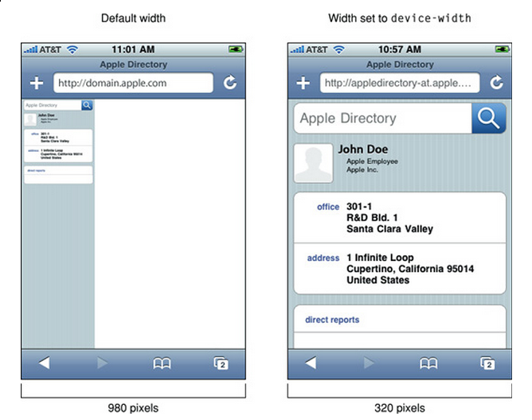
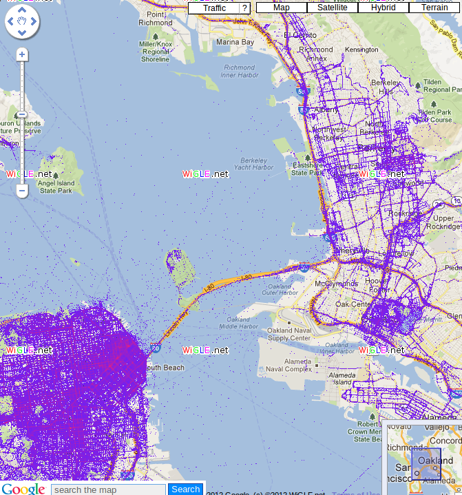
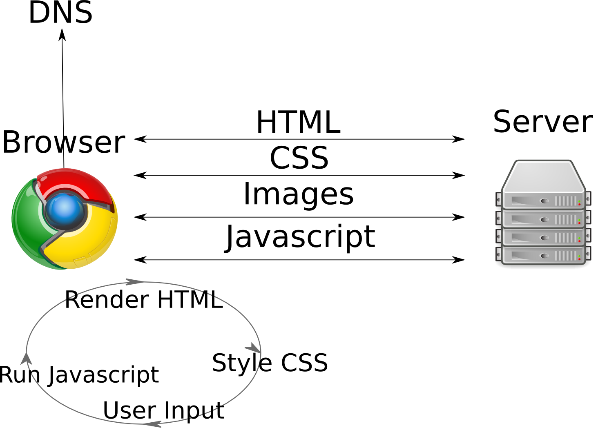

Mobile-Features
Table of Contents
1 Developing Mobile Apps
2 Specifics
mediaselected CSSmetatags for mobile- Responsive Layouts
- Javascript APIs
- Local Data
3 Review
- What do you use to show the same content in different ways?
3.1 Style Sheets! notes
- CSS
4 Right CSS
- Display differently for different devices
- Traditionally, devices were general: print, screen, presentation
<link rel="stylesheet" media="print" href="printer.css"> <link rel="stylesheet" media="screen,presentation" href="general.css">
4.1 Browsers select CSS notes
- If the browser is not printing a page, doesn't apply
printer.css - other devices: braille, handheld, tty, tv
- printers, screen (desktop web), presentation (full screen)
- comma separates devices
4.2 Media Queries
- Additionally require precise attributes
- Combine attributes with logical operators
<link rel="stylesheet" media="handheld, only screen and (max-device-width: 320px)" href="phone.css"> <link rel="stylesheet" media="only screen and (min-width: 641px) and (max-width: 800px)" href="ipad.css">
4.3 Attributes notes
- width, height, orientation, aspect-ratio, color, resolution
onlykeyword a backward compatable addition: browsers that don't understand it will not apply because there is no 'only' device@mediacan be used inline in CSS (example later)
4.4 Now What?
- Reduce white space
- Single column layouts
display: nonebanner ads- Avoid
opactiytweaks - Smaller background image
- Demo
4.4.1 Mobile differences notes
- Now that you can specify a special mobile sheet, what's in it?
- Screen real estate valuable, reduce extra space
- slim down loayout, can't see sidebar anyway (we'll talk about doing this automatically later; responsive design)
- large images or banner ads have to go
opacityand other visual tricks are performance hits- Download less data, eg. big pictures
5 Viewport animate two_col
- What happens when you load a traditional web page on your phone?
- Zoom!
- Now you are looking at a sub-section of the page: your viewport

5.1 Zoom! notes
- Reading will have full details on viewport
- Browsers can't say they only support 400px, because everything on the screen would look crazy for normal web pages
- So instead they report 850px (eg), then zoom in
- But if we design the layout to be for 400px, then we need to tell the browser to actually display page with 400px width
5.2 meta viewport
- Controlling viewport can feel more like a native app
- User is not zooming in or out
<meta name=viewport content="width=device-width, initial-scale=1.0, minimum-scale=0.5 maximum-scale=1.0">
5.2.1 Controlling viewport notes
user-scalable=yesallow or prevent scaling- instead of saying "400px" we say
device-widthto adapt to different devices
5.3 Viewport difference

5.4 Pixels notes
- You can make your page an appropriate size for the device (eg 320 px),
but it will still show a 960 px screen by default
- Setting the window can "zoom" into the right amount
6 Responsive Web Design
- Combines these techniques
- Sane defaults for all devices
- Examples in newer frameworks (Bootstrap, HTML5 Boilerplate)
@media (min-width: 1200px) { .row { margin-left: -30px; *zoom: 1; } .row:before, .row:after { display: table; line-height: 0; content: ""; } ...} @media (max-width: 480px) { .nav-collapse { -webkit-transform: translate3d(0, 0, 0); } .page-header h1 small { display: block; line-height: 20px; } input[type="checkbox"], input[type="radio"] { border: 1px solid #ccc; } ...} .row-fluid { width: 100%; *zoom: 1; }
6.1 Details notes
@mediaqueries to select styles- "Fluid" grids based on relative values, eg. % or em
7 Javascript APIs
- Touch Events
- Handle (multiple) finger movements
- Geolocation
- Report your location
- Battery
- Report device battery use
- Ambient Pressure
- Air pressure around device
- getUserMedia
- Access to camera, video (demos)
7.1 Deep Dive notes
- There are many more HTML5 related APIs, eg. Fullscreen
- The first two are well supported so we'll discuss
- Second two are cutting edge
- But if you're interested, fire up phone and follow the link after class
8 Javascript events
onload,onchangefor general eventsonclick,onmousedown,onmouseupfor mouse events- New API needed for multitouch
8.1 One Mouse notes
- Since there's only one mouse, needed a new vocabulary to talk about touch events
- Kind of unfortunate since there is overlap between potential mouse actions and touch (eg. drag and drop)
8.2 Touch Events
touchstart,touchmove,touchendtouches,targetTouches,changedTouchesidentifier,target, coordinates, finger shape
8.2.1 Details notes
- Point is: we're getting more data about all fingers, instead of one mouse.
- Just like how Javascript composed well with CSS to enable complex transitions, these simple touch events can be used for everything from swiping to pinch-to-zoom
- touchstart
- a finger is placed on a DOM element.
- touchmove
- a finger is dragged along a DOM element.
- touchend
- a finger is removed from a DOM element.
- Each touch event includes three lists of touches
- (no term)
- touches
- a list of all fingers currently on the screen.
- targetTouches
- a list of fingers on the current DOM element.
- changedTouches
- a list of fingers involved in the current event. For example, in a touchend event, this will be the finger that was removed.
- These lists consist of objects that contain touch information
- identifier
- a number that uniquely identifies the current finger in the touch session.
- target
- the DOM element that was the target of the action.
- client/page/screen coordinates
- where on the screen the action happened.
- radius coordinates and rotationAngle
- describe the ellipse that approximates finger shape.
8.3 Demo
9 Location two_col
- GPS
- IP (Demo)
- WiFi

9.1 Ways to find location notes
- GPS, most obvious now, but recent
- We discussed how IPs were routed: through different networks
- If you have a good idea of where network is, you can start guessing on where individual IPs are
- WiFi uses list of known network names or MACs (network card identifiers) to guess where you are if you're connected to one.
9.2 navigation.geolocation
- Javascript API
navigator.geolocation.getCurrentPosition(callback)
Click to get coordinates
9.3 Code
<p id="geolocation">Click to get coordinates</p> <button onclick="getLocation()">Try It</button> <script> var x=document.getElementById("geolocation"); function getLocation() { if (navigator.geolocation) { navigator.geolocation.getCurrentPosition(showPosition); } else { x.innerHTML="Geolocation is not supported by this browser.";} } function showPosition(position) { x.innerHTML="Latitude: " + position.coords.latitude + "<br>Longitude: " + position.coords.longitude; } </script>
10 Overview

10.1 Overview notes
- We are back at the land of browsers and interactivity
- We're still building on the same stack: HTML standards, TCP-IP for
communication, servers sending data
- But our clients have suddently become much more interactive and immersive